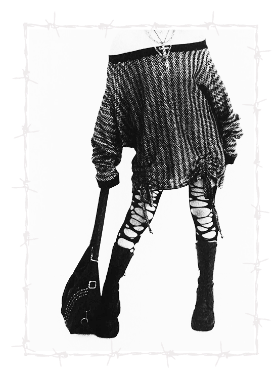

EXPECTATIONS
How much do you base your design choices on what you think the audience might expect?
I would say not very heavily. I personally am still pretty new in the industry; but when I design—although trends are still important and keeping up with what is in fashion—I think that I mostly base my design process on what is inspiring me and the shapes that I see in the day-to-day. I try to stay true to my own design choices based on what I'm trying to say, the story I'm trying to tell, and the looks that I want to achieve.